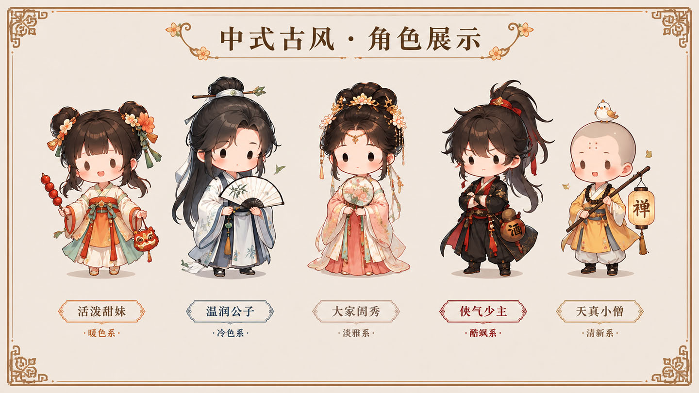
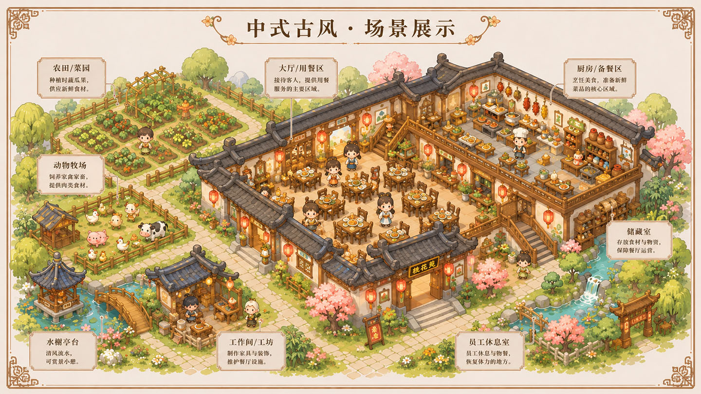
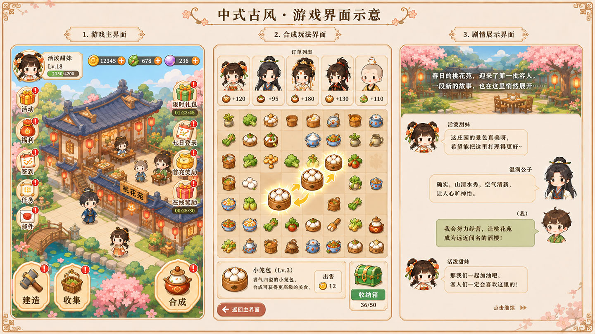
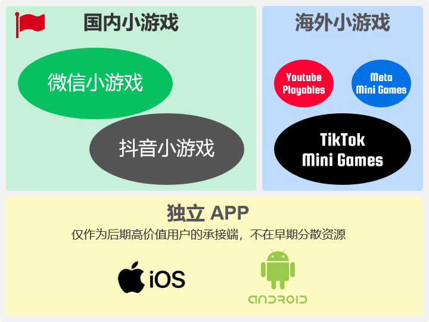
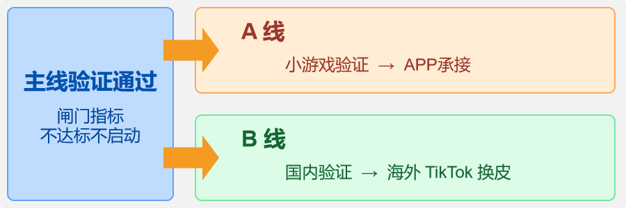
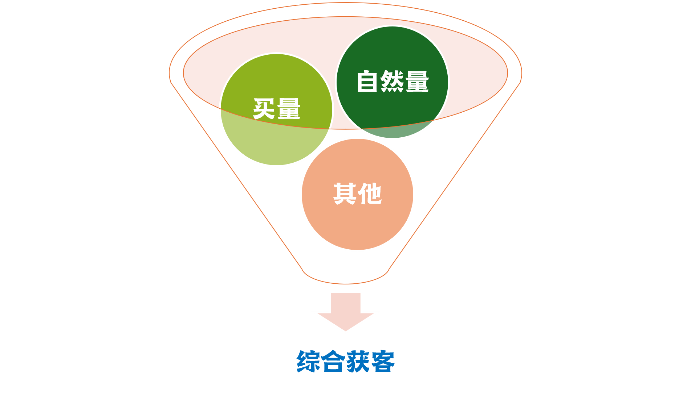

LSG（Leisure Simulation Games）Team · 老司机小队
我们是一支 6~9 人的精干独立游戏小队，主攻「休闲模拟经营 +」品类，核心方向为古风餐厅模拟经营 + 二合玩法。
我们信奉自力更生的精益打法：先验证、后规模；先社区、后产品。
团队综述
团队长期专注于女性向休闲模拟经营品类，具备从 0–1 立项、核心循环设计、数值经济模型、H5 / 小游戏双平台（微信 / 抖音）上线运营到版号申报的完整闭环能力。
团队最近联合开发并长期运营的产品，为典型女性向休闲模拟经营（花园世界 Like）——在微信 & 抖音小游戏平台大区服稳定运营，验证了"核心循环 + 强社交留存 + H5 / 小游戏双端适配"的工业化交付能力。
团队覆盖策划、数值、美术、前端等核心环节，辅以 AIGC 美术工作流与 AI 辅助研发工具链，可在精简人力下保持高产能与快速迭代节奏。
团队近期项目 脱敏表述
团队主创长期共同供职于同一女性向休闲模拟经营项目（下称「该项目」，名称脱敏），覆盖产品、策划、数值、美术、前端全岗位，完整经历其从立项到双平台小游戏上线的全过程：
· 早期立项定位：女性向换装模拟经验（原型《来我家玩吧》）；
· 2025.10 定位调整：转向「花园世界 Like」女性向休闲模拟经营；
· 研发节奏：用时 4 个月完成 3 日版本上线、7 个月完成 7 日付费验证测试；
· 平台突破：作为公司首个以小游戏为主要平台的项目，独立打通微信 / 抖音小游戏平台的完整入驻、接入与上线运营工作。
团队 AI 能力
研发工程侧：核心成员具备 SDD（Spec-Driven Development，基于 Claude Code + OpenSpec）的实战经验，并对 TDD（测试驱动开发）亦有实践认知，可将"先规格、后实现、可验证"的工程方法导入小游戏的快速迭代，显著降低需求歧义与回归成本。
美术生产侧：已建立基于主流 AIGC 模型（Gemini Banana、GPT-Image-2、Seedance 2 等）的美术工作流，覆盖角色原画概念生成 → 精修、动态宣发素材生产等环节，显著降低美术产能与外包成本。
团队核心成员列表
MMarkel ★制作人 / Producer17 年游戏研发 & 运营，横跨端游 / 页游 / 手游 / H5 小游戏全平台，深耕国风 / 女性向模拟经营赛道▶
WWQ ★前端主程 / Lead Frontend14 年 H5 / 小游戏前端开发，精通 Cocos / Egret / Laya 等主流引擎▶
?xx ★后端主程 / Lead Backend人选待定 · 规划职责：服务端架构与选型、微信 / 抖音小游戏大区服数据同步与运营支撑、数值配置与 GM 工具后端实现、线上运维与性能保障▶
ZZQ ★2D主美 / Lead Artist10 年游戏美术，云南艺术学院绘画本科，精通二次元 / 欧美卡通 / 国风拟想多风格▶
NNova ★主策划 / Lead Designer11 年手游设计，覆盖女性向模拟经营、社交养成卡牌、平台小游戏多赛道▶
YYYT ★交互策划 / Interaction Designer14 年游戏策划，累计主导或参与近 20 款产品上线，其中 10+ 款日活破 10 万、6 款月流水超百万▶
DDKW数值策划 / Numerical Designer13 年数值策划，从 0 到 1 主导千万流水项目，覆盖战斗 / 经济数值、商业化设计全链路▶
?xx2D动画 / Animator人选待定 · 规划职责：角色 / 场景动作动画、UI 动效、宣发短视频动画制作，配合主美建立动画生产规范▶
WWhite前端开发 / Frontend Dev8 年+ Cocos Creator 客户端开发，精通 Cocos / Laya / Egret 多引擎，覆盖合成 / 女性向古风 / 卡牌多品类▶
市场机会洞悉
两个平台构成国内小游戏双引擎：微信依赖社交流量（好友裂变、群分享、视频号短剧联动），抖音依赖内容流量（短视频/直播挂载即点即玩，与短剧同源）。女性向用户涨幅约为男性向的 2 倍，国风/本土文化题材具备文化认同溢价——为本土化题材产品提供了差异化的用户基础。
TikTok Minis 已于 2026.1 全面公测（美/日/东南亚/巴西/中东等），增长机制是"内容即入口、短视频挂载即点即玩"——与「剧情化短剧获量 + 小游戏承接转化」同一底层逻辑，只是海外更早期、更不饱和。榜单头部被模拟/经营类霸占（TOP5 前四皆为模拟），正是二合经营内核的主场。
📌 命名口径：TikTok Minis 是平台小程序总生态品牌（含短剧 + 小游戏，即用户菜单入口名）；其中小游戏子频道官方名为 TikTok Mini Games（应用内聚合中心称 Mini Games Center）。
横轴为模拟经营子类型，纵轴为可融合的特定玩法。颜色越绿 = 市场验证越充分、可行性越高。以下等级基于国内微信/抖音小游戏生态评估。
| 玩法融合 ↓ / 模拟经营子类型 → | 餐厅/烹饪经营 | 农场/田园经营 | 城市/领地建设 | 装修/庭院改造 | 宠物/养成经营 | 末日生存经营 |
|---|---|---|---|---|---|---|
| 二合合成 Merge-2 | S级 已验证 | S级 已验证 | A级 部分验证 | S级 已验证 | A级 部分验证 | B级 待验证 |
| 三消 Match-3 | B级 竞争红海 | A级 成熟品类 | B级 待验证 | A级 成熟品类 | B级 待验证 | C级 |
| 放置挂机 Idle | A级 部分验证 | A级 部分验证 | B级 | B级 | A级 部分验证 | B级 |
| 塔防+SLG | B级 | C级 | S级 已验证 | C级 | C级 | S级 疯狂水世界 |
| 找茬/寻物 | A级 海外验证 | B级 | B级 | A级 潜在机会 | B级 | C级 |
| 排序收纳 | B级 | B级 | B级 | A级 社交传播强 | B级 | C级 |
| 卡牌收集/Gacha | A级 部分验证 | A级 | S级 这城有良田 | A级 | A级 部分验证 | A级 已验证 |
| 解谜/剧情推理 | A级 | B级 | B级 | A级 Gossip式 | B级 | C级 |
海外标杆：Gossip Harbor（绯闻港口，柠檬微趣）| 月流水峰值 $6,300万（2025.11）| 2026 初登顶出海手游收入榜冠军 | 全球二合第一。
国内对标：餐厅养成记（国风合成+餐厅经营，TapTap 7.9 分）| 肥鹅健身房（合成+Q版经营，2020初代/长期运营，2025H1国内收入约2,171万）→ 续作《肥鹅美食街》（2025末，二合+美食经营，更贴近本方向）| Flambé（柠檬微趣，烹饪+餐厅新作）。
核心循环：合成食材 → 完成订单获取金币 → 修葺店铺 → 推动剧情 → 解锁更多合成元素。
差异化空间：(1) 东方/本土美食题材竞争者相对少；(2) 剧情化叙事承接（章节式）；(3) 社交化改造：公会互助、好友餐厅互访。
国内对标：四季合合（国风庭院合成+装修）| 我的花园世界（2026 春节登顶微信小游戏畅销榜 TOP1，女性向花店模拟经营黑马）| Merge Mansion（庄园合合，腾讯代理国服）。
核心循环：合成装饰材料/家具 → 解锁庭院区域 → 自由 DIY 装修 → 推进家族剧情 → 收集更多装饰元素。
差异化方向：(1) 特定文化主题庭院（如东方/中式园林）——四季合合已证该方向可行，但纯文化主题二合+装修在微信端仍为少数（多数合成经营为西式/现代题材）；(2) 市井经营+装修（如特定历史场景主题）；(3) 与知名 IP 联动提升买量效率。
国内对标：小森灵（合成+农场经营，TapTap 7.3）| 奶牛镇的小时光（社交田园经营）| Merge Dragons!（品类鼻祖）。
核心循环：合成植物/动物/工具 → 解锁新田地区域 → 种植/养殖/加工 → 售卖农产品 → 装饰农场。
国内对标：合成猫咪（超轻量纯合成+收集）| 肥鹅健身房（合成+健身房Q版经营，系列前作）→ 续作《肥鹅美食街》（二合+美食经营，2025末）。
核心循环：合成同类宠物升级/解锁新物种 → 装饰宠物家园 → 收集图鉴 → 解锁宠物故事 → 社交分享萌宠。
标杆：梦幻花园 / 梦幻家园（Playrix，全球累计收入超 $50亿）。2025 Candy Crush 收入 $11亿，Royal Match $14亿。
核心循环：挂机自动生产资源 → 升级经营设施 → 解锁新品类/新区域 → 收集图鉴 → 循环提升效率。
海外标杆：June's Journey（寻物+剧情+装修，年收入超 $2亿）。国内机会：微信端几乎无"找茬+模拟经营"深度结合，中老年女性用户基数大，是明显蓝海；本土文化题材寻物（如历史画卷式大场景）差异化强。
趋势：排序收纳类（如"收纳达人"）近期在抖音/TikTok 靠"解压 ASMR"内容获极大传播。可作为模拟经营中的资源管理环节（整理杂乱物资解锁经营资源）。
国内标杆：这城有良田（古风城市经营+卡牌养成，微信畅销榜 Top30）| 商业都市 | 疯狂水世界（模拟经营+英雄卡牌+SLG）。
标杆：Gossip Harbor 本身就是"合成+经营+悬疑剧情"经典案例；Merge Mansion 以"奶奶隐瞒了什么"为剧情驱动。柠檬微趣已把"狗血剧情"作为二合经营核心差异化武器。
市场趋势显示，单一"模拟经营 + X"已不够，头部产品普遍采用"前期钩子 + 中期留存 + 后期付费"的多层结构。以下混合组合供战略储备参考，单一玩法验证成熟后再拓展。
标杆：疯狂水世界（益世界，微信畅销榜 Top10）| 无尽冬日 | 三国冰河时代。
采集·建造·加工 → 中期：卡牌RPG
英雄养成·推关 → 后期：休闲SLG
联盟GvG·赛季
设计思路：二合合成"物品产出"与卡牌养成"角色效率提升"形成双向循环——合成材料产出抽卡券，卡牌角色提升合成效率/解锁新合成链。
标杆：这城有良田（古风城市经营→卡牌→轻度SLG，微信畅销榜 Top30）| 我是大东家。
设计思路：在经营场景中将"找茬/寻物"作为获取特殊合成材料途径——如餐厅寻隐藏食材、庭院寻遗失装饰品，找到的物品进入合成棋盘。
标杆：Flambé: Merge and Cook（柠檬微趣 2025 新作，二合+烹饪+餐厅）| 餐厅养成记（国风二合+中式烹饪）。
基于市场验证、竞争烈度、ARPU 潜力、开发难度等五维度的综合评估（S＞A+＞A＞A-＞B+＞B＞C）。
| 排名 | 组合 | 可行性 | 市场验证 | 竞争烈度 | ARPU潜力 | 开发难度 | 综合推荐 |
|---|---|---|---|---|---|---|---|
| #1 | 二合合成 × 餐厅/烹饪经营 × 剧情 | S | ★★★★★ | 中高 | ★★★★★ | 中高 | ⭐⭐⭐⭐⭐ |
| #2 | 二合合成 × 装修/庭院改造 × 剧情 | S | ★★★★★ | 中 | ★★★★☆ | 中 | ⭐⭐⭐⭐⭐ |
| #3 | 模拟经营 → 卡牌RPG → 休闲SLG（疯狂水世界） | S | ★★★★★ | 中高 | ★★★★★ | 高 | ⭐⭐⭐⭐ |
| #4 | 二合合成 × 农场/田园经营 | A+ | ★★★★☆ | 低 | ★★★☆☆ | 中低 | ⭐⭐⭐⭐ |
| #5 | 卡牌收集 × 城市建设经营（这城有良田） | A | ★★★★☆ | 中 | ★★★★★ | 中高 | ⭐⭐⭐⭐ |
| #6 | 找茬/寻物 × 装修经营 × 剧情 | A- | ★★★★☆ | 低 | ★★★☆☆ | 中 | ⭐⭐⭐☆ |
| #7 | 二合合成 × 宠物养成经营 | A | ★★★☆☆ | 中 | ★★☆☆☆ | 低 | ⭐⭐⭐ |
| #8 | 二合合成 × 烹饪时间管理 | A- | ★★★★☆ | 中 | ★★★☆☆ | 中 | ⭐⭐⭐ |
| #9 | 放置挂机 × 收集养成经营 | A | ★★★☆☆ | 中 | ★★☆☆☆ | 低 | ⭐⭐⭐ |
| #10 | 二合合成 × 卡牌养成（三核混合） | B+ | ★★☆☆☆ | 低 | ★★★★☆ | 高 | ⭐⭐☆ |
| #11 | 二合合成 × 寻物（双休闲融合） | B+ | ★☆☆☆☆ | 极低 | ★★★☆☆ | 中高 | ⭐⭐☆ |
| #12 | 排序收纳 × 装修/家居经营 | B | ★★☆☆☆ | 极低 | ★☆☆☆☆ | 低 | ⭐⭐ |
| #13 | 三消 × 花园/餐厅经营 | B+ | ★★★★★ | 极高 | ★★★★☆ | 极高 | ⭐☆ |
两个平台构成国内小游戏双引擎，流量来源与适配玩法不同，但都可用剧情化短剧内容做零成本自然量，对双平台通用。
| 维度 | 微信小游戏 | 抖音小游戏 |
|---|---|---|
| 流量来源 | 社交关系链（好友/群/朋友圈）、公众号、视频号 | 短视频/直播内容流量、达人挂载、挑战赛 |
| 核心优势 | 裂变强、审核快、用户付费习惯较好 | 内容即入口、短剧/玩法视频零成本引流、算法分发潜力大 |
| 短剧联动 | 视频号短剧与游戏天然联动，剧情章节式承接 | 短剧/玩法视频挂载即点即玩，与游戏同源流量 |
| 适配玩法 | 强剧情/社交（公会互助、好友互访、菜品比拼） | 视觉冲击强、解压/ASMR、短剧化剧情 |
| 代表产品 | 这城有良田、餐厅养成记、四季合合 | 抓大鹅（抖音月活超千万）、大量合成/解压类内容爆款（抖音原生） |
模拟经营 + 二合合成的市场机会
1. 品类势能
合成游戏 2025 年全球市场增速 27%，中国厂商占据二合品类近 80% 份额。Gossip Harbor 月流水峰值 $6,300万（2025.11）、2026 初登顶出海手游收入榜冠军，证明天花板远未被触及。
2. 用户重合度
二合游戏用户与传统三消、模拟经营用户高度重合，但合成玩法在休闲程度、挫败感控制、内容产能压力上更具优势。79% 玩家为 30 岁以上女性。
3. 微信生态适配
二合棋盘 + 经营界面天然适配竖屏手机，15 分钟碎片化 session 完美匹配微信小游戏场景。章节式叙事适配"即开即玩、即走即停"。
4. 商业化成熟度
混合变现（IAP+IAA）已被头部产品充分验证。Gossip Harbor 广告收入占总收入 15–20%，看广告用户付费意愿提升 4.5 倍。
先聚焦国内市场环境下的确定性机会，再以出海空间作为验证后的增量延展。
A. 国内市场机会（主战场）
B. 出海空间机会（验证后延展）
标杆佐证（去品牌化）
现象级「古风花店模拟经营」小游戏「我的花园世界」（2025.8 公测）——女性向古风包装、小游戏先行导 APP，以"大女主逆袭"剧情化叙事（文本剧情钩子，驱动留存与买量）击穿女性向赛道。上线 8 个月全球流水破 8,000 万美元、2026 春节双端（微信 + 抖音小游戏）登顶畅销榜 TOP1、小程序端流水达亿级。其与本方向（古风 + 女性向 + 模拟经营 + 剧情化叙事 + 小游戏先行）高度同构，是赛道可行性的强证据。
项目方案概览
1执行摘要▶
1.1一句话定位
古风餐厅「合成 + 经营」轻量循环小游戏：靠剧情向 AI 短剧零成本养自有古风受众，IAA×IAP 混合变现，验证留存与 unit economics 后导流独立 APP做长线 IAP。
1.2核心逻辑 · 为什么现在能做
1.3财务内核（摘要）
1.4团队配置 · 两套可选方案
前端主程 ×1 · 后端主程 ×1 · 2D主美 ×1
前端主程 ×1 · 后端主程 ×1 · 前端开发 ×1
2D主美 ×1 · 2D动画 ×1
② 团队规模、分工与履历详见本页 团队核心成员列表。
2市场分析▶
2.1国内市场大盘
| 指标 | 数据 | 含义 |
|---|---|---|
| 国内小游戏市场规模（2025） | 约 610 亿，+22% | 仍高增长，增速从 64% 回落，进入存量期 |
| 2026 预测规模 | 突破 700 亿 | 赛道未触顶 |
| 微信小游戏 MAU / DAU | 5.71 亿 / 破 1 亿 | 最大分发场域 |
| 抖音小游戏月活 | 约 1.71 亿（半年 +44%） | 与短剧同源流量，联动顺 |
| 百万 DAU 产品数（微信） | 70 款 | 头部稀缺，中腰部有机会 |
| 单季流水超千万产品 | 300 款 | 中小团队可触达的收入量级 |
| 开发者规模 | 超 40 万，80% 中小团队 | 本团队属主流"中小团队"画像，非劣势 |
| 女性向游戏涨幅 | 为男性向的 2 倍 | 古风女性向是溢价赛道 |
目标用户：古风 / 国风受众、女性向 / 治愈向轻游戏玩家、短剧观众。碎片化高频（人均单日启动 5.1 次、时长 24.6 分）、一二线 + 年轻女性占比高，为"审美 + 情绪 + 剧情"付费意愿稳。痛点：市场"有剧情、有经营、轻量可玩"产品稀缺；短剧观众看完剧想延续体验却无承接——本产品即承接。
差异化：以独立原创古风餐厅 IP「望月食坊」（已定）为壳，IP 权属干净、美术可控、情绪差异化明确；对标已验证标杆，新增"合成机制"（强化留存正反馈）与"AI 短剧工业化产能"（叙事钩子升级为可规模内容引擎、压低获客成本），形成差异化壁垒。
2.2海外市场机会（TikTok Minis）
3产品方案▶
3.1核心玩法循环
新手封闭教学 ≈5 分钟达成"有效用户"；基础循环 = 合成链（MVP 切片 5 条，目标态 4 类 20 链）× 5 关 + 1 条主线剧情钩子。坚决砍掉社交 / UGC / 复杂装修 / 多角色线 / 排行榜——防功能膨胀。留存三段叠加：合成正反馈 + 经营目标感 + 剧情钩子（标杆次留 45%+，冲刺 50%）。
3.2美术与世界观
以融合唐宋明的架空古风时代为背景，以原创古风叙事语言讲述“餐厅里的人和事”。以 Q版 2.5~3头身 + 豆豆眼 为核心美术特征，并利用AIGC工具，生成模版素材 + 轻量H5/无代码拼装验证，跑通流程后再进行定制制作，以控制美术成本。



以上示意图均为AI生成素材，仅作为前期风格示意，不代表最终风格与品质。
3.3平台优先级 · 优先小游戏

结论：小游戏（国内微信 / 抖音 + 海外 TikTok Minis）是验证与变现主战场；APP 与换皮版均为验证成立后的延伸。
3.4产品拓展策略（A / B 两线）

A 线：国内小游戏跑通留存与 unit economics，将高价值用户导流独立 APP 做长线 IAP（提高 IAP 占比与客单价，缩短回本周期）。
B 线：同内核换皮版（中世纪风格「豆豆眼餐馆 The Dot-Eyed Tavern」）切入 TikTok Minis 出海；换皮仅替换 ① 美术皮 ② 语言本地化 ③ 平台 SDK ④ AI 短剧重拍，游戏逻辑 / 数值 / 变现框架零改动。
4获客与变现▶
4.1增长飞轮
4.2获客双轨（自然量为主，买量仅放大）

| 轨道 | 方式 | 成本 | 阶段 |
|---|---|---|---|
| 自然量（主） | 抖音 / 视频号剧情向 AI 短剧 + 小红书古风种草 + 微信私域 | ≈0 | 全程，早期主力 |
| 买量（放大） | 巨量 / 广点通，CPA 硬门槛 ≤ ￥5 | ￥5 / 注册 | 仅 model 验证后放大 |
同心圆触达（由内到外）：① 内圈（种子）团队私域 + 朋友，约 100 人测次留与崩溃率；② 中圈（主力）AI 短剧粉丝——剧中 / 剧末挂小游戏链接，角色"客串顾客"引导进游戏；③ 外圈（放大）平台自然量 + 小红书古风种草。
内容节奏：每周 2–3 条剧情向 AI 短剧（古风餐厅里的人和事），抖音 / 视频号分发，剧末 / 评论区挂小游戏；微信社群做剧情投票、新关卡预告，提升回流。
4.3双变现引擎
定位：首日第一变现途径，但占总 LTV ≤5%。
· 去广告包 ￥6–12
· 体力 / 资源包 ￥1–30
· 限时皮肤 / 餐厅主题 ￥6–18
· 成长基金（买断制进度奖励）
· 月度战令 ￥18–30（含限定皮肤 + 资源返利）
· 赛季战令（配合剧情节点）
· 新手 7 日战令 ￥6（首充引导）
定位：产品 LTV 主来源。
4.4LTV 成长曲线（每注册用户 / 元）
| 日 | 首日 | 3日 | 7日 | 14日 | 30日 | 45日 | 60日 | 90日 | 120日 |
|---|---|---|---|---|---|---|---|---|---|
| LTV（元） | 0.15 | 0.30 | 0.55 | 1.00 | 1.60 | 2.10 | 2.50 | 3.30 | 4.00 |
| 倍率（vs 首日） | 1.0x | 2.0x | 3.5x | 7.0x | 10.5x | 14.0x | 17.0x | 22.0x | 27.0x |
首日 IAP：付费率 1.5% × ARPPU ￥10 = 首日 IAP LTV ￥0.15；买量首日 ROI 3%。IAA≤5% 的取舍：抬高叙事与长线内容要求，但契合"内容 / IP 驱动 IAP"定位，LTV 比纯广告型小游戏更依赖留存深度——需确保剧情产能。
4.5单用户经济效益模型（Unit Economics）
综合 CAC = ￥5 × 买量占比（自然量 CAC≈0）。自然 ≥20%（买量 ≤80%）→ CAC ≤4.0 → 120 日回本；自然 10–15% → CAC 4.25–4.5 → 回本延长至约 150 天+；自然 50% → CAC 2.5 → 约 60 日回本、ROI 160%。真正约束是现金跑道 ≥ 回本周期——自有现金流撑得住 150+ 天垫资，模型仍成立。
4.6CPS 变现可能（拓展）
国内微信 / 抖音均在逐步开放 CPS（按成交分佣）；海外 TikTok 本就开放内容电商挂载。CPS 可作为验证后期、自然流量溢出时的增量变现通道，不纳入早期核心模型，仅作拓展观察。
5验证指标体系▶
| # | 指标 | 预设目标 | 业内参照（休闲 / 经营类 2024–2025） |
|---|---|---|---|
| 1 | 买量注册成本 | ≤ ￥5 / 注册 | ￥4–15（古风 / 女性向偏 ￥6–12） |
| 2 | 有效用户标准 | 完成封闭新手教学 + 开放操作 1–2 关 / 基础循环，时长 ≈5 分钟 | — |
| 3 | 注册有效率 | 自然 ≥45% / 买量 ≥35% / 综合 ≥40% | — |
| 4 | 有效次留率 | ≥50%（折算注册次留 ≥20%） | 35–50%（一线水平） |
| 5 | 首日 IAP | 付费率 1.5%、ARPPU ￥10 → LTV ￥0.15；首日 ROI 3% | 付费率 1–3%；首日 ROI 8–15% |
| 6 | 付费用户留存 | 次留 ≥70% | 60–75% |
| 7 | IAA 定位 | 首日第一变现途径，占总 LTV ≤5% | — |
| 8 | LTV 回本线 | 综合 LTV ≥ ￥4.00 回本，理想 ￥4.50–5.00 | 120 日 LTV / 注册 ￥4–20 |
| + | 短剧→游 CTR | ≥3% | — |
6里程碑路线图▶
6.1路线图总览
6.2阶段总表
| # | 阶段 | 核心目标 | 关键交付 | 6 人团队周期 | 9 人团队周期 |
|---|---|---|---|---|---|
| 1 | MVP 版本 | 跑通两个循环（建生产线） | 可玩核心循环原型 + AI 短剧内容引擎流水线 | T0–T0+8 周 | T0–T0+6 周 |
| 2 | 3 日版本 | 验证留存与引流 | 可提交 3 日+ 版本（含 3 日留存循环与钩子） | T0+8–T0+18 周 | T0+6–T0+14 周 |
| 3 | 7 日版本 | 验证短期付费 | 可提交 7 日+ 版本 | T0+18–T0+30 周 | T0+14–T0+24 周 |
| 4 | 长线盯数 | 长线 LTV 达标 | 长线运营 + 红黄灯机制 | 阶段三达标后启动（两方案一致） | |
| 5 | 拓展产品 | 规模放大 + 多市场 | 国内买量放大 + APP / 海外换皮准备 | 阶段四达标后启动（两方案一致） | |
稳健（6 人）前三阶段总周期约 30 周（8+10+12），以更长周期换更低 burn；快速（9 人）约 24 周（6+8+10），以更高 burn 压缩约 20% 总周期。阶段四 / 五为达标触发式，不绑定固定周数。
6.3各阶段细化（折叠卡片）
1MVP 版本跑通两个循环▶
工作目标：① 锁定 1 个核心循环（合成→经营→解锁剧情钩子）与美术基调；完成封闭新手教学 + 开放操作 1–2 关 / 基础循环（≈5 分钟达成"有效用户"）。② 搭建 AI 短剧内容引擎生产线（脚本模板、分镜流水线、精修 SOP）——按"可复用生产线"标准搭建。
关键交付：可玩核心循环原型；第 1 条 AI 短剧成片过审；内容引擎 SOP 文档。
三色灯：本阶段不设对外闸门（重点"把两条生产线建起来"），内部以"可玩、逻辑自洽、首片过审"为完成判据。
23 日版本验证留存与引流▶
工作目标：交付可提交 3 日+ 版本（合成链由 MVP 切片扩至目标态 4 类 20 链 + 5 关 + 1 条主线剧情钩子 + 3 日回流设计）。
验证指标：留存侧——注册有效率（自然≥45% / 买量≥35% / 综合≥40%）、有效次留≥50%（黄灯 40%）、注册次留≥20%。引流侧——AI 短剧流量获取能力（完播率、涨粉、自然占比）；短剧→游 CTR≥3%、进游注册数。
| 指标 | 🟢 绿灯 | 🟡 黄灯 | 🔴 红灯 |
|---|---|---|---|
| 有效次留 | ≥50% | 40–50% | 连续批次 <40% |
| 注册有效率（综合） | ≥40% | 30–40% | <30% |
| 短剧→游 CTR | ≥3% | 1.5–3% | <1.5% |
判定：留存与引流双侧达标 → 进阶段三；任一侧不达标 → 迭代对应循环（玩法钩子或短剧分镜），不 Pivot。
37 日版本验证短期付费▶
工作目标：交付可提交 7 日+ 版本，内容深度支撑 7 日留存与首周付费。
验证指标：1–7 日 LTV（首日 0.15 / 3 日 0.30 / 7 日 0.55）；首日 IAP 付费率 1.5%、ARPPU ￥10、买量首日 ROI 3%；付费用户次留≥70%。
三色灯：付费指标达标 → 进阶段四；付费率 / ARPPU 偏差大 → 限期优化内购点与定价（阶段四黄灯处理）。
4长线盯数长线 LTV 达标▶
工作目标：重点盯 LTV 成长曲线至 120 日 ≥4.0，持续监测留存与引流健康度。
验证指标：120 日 LTV≥4.0；有效次留≥50%；自然占比≥20%。
| 指标 | 🟢 绿灯（健康） | 🟡 黄灯（限期优化） | 🔴 红灯（叫停） |
|---|---|---|---|
| 有效次留 | ≥50% | 40–50% | 连续批次 <40% |
| 注册有效率（综合） | ≥40% | 30–40% | <30% |
| 自然占比 | ≥20% | 10–20% | <10% |
| LTV 曲线偏离 | ≥目标值 | 实际 < 目标×0.8 | 实际 < 目标×0.6 连续 2 周 |
| 短剧→游 CTR | ≥3% | 1.5–3% | <1.5% |
红灯动作：立即叫停相关动作，复盘明确恢复条件后再启动。黄灯动作：维持现状、设 7–14 日限期优化，到期复测未达标则升级红灯或 Pivot。
5拓展产品规模放大 + 多市场▶
前置条件：阶段四达标（120 日 LTV≥4.0、有效次留≥50%、自然占比≥20%）、unit economics 成立。
工作目标：① 国内买量放大；② 同步准备 A 线 APP 承接版 / B 线 TikTok Mini Games 中世纪换皮版（复用内核 + 内容引擎）。
验证指标：买量 ROI 转正、120 日 LTV≥4.0。
| 灯色 | 含义 | 动作 |
|---|---|---|
| 🟢 绿灯 | 综合指标达标（ROI 健康、CPA≤5、次留达标） | 升档扩大买量规模 |
| 🟡 黄灯 | 某指标临界（CPA 5–7、次留 40–50%、自然 10–20%） | 维持当前量，限期优化，不升档 |
| 🔴 红灯 | 核心指标破红线（CPA 连续 3 日 >7、次留<40%、LTV 严重偏离） | 立即叫停买量，回自然量主线复盘 |
MVP 设计文档
1MVP 版本定义▶
1.1核心目标
1.2关键交付
1.3MVP 范围
做这些（MVP 硬边界）：1 个核心循环（合成 + 经营）；古风餐厅皮（单场景、唐宋明架空、Q 版 2.5~3 头身 + 豆豆眼、食魂 mascot）；合成链切片（MVP 5 条：食材×2+器物×1+菜品×1+道具×1，目标态 4 类 20 链）+ 5 关；1 条主线剧情钩子；激励视频 IAA 接入 + 基础 IAP；短剧→游转化埋点。
砍掉清单（留待阶段③/④ 验证后）：社交 / 公会 ｜ 多端同步 ｜ UGC ｜ 复杂装修系统 ｜ 多角色线 ｜ 排行榜 ｜ 复杂分支剧情 ｜ 大量美术变体 ｜ 重度 IAP 系统 ｜ 长线运营活动。
1.4变现嵌入点
IAA：激励视频（复活 / 体力 / 加速），插屏节制使用保体验。
IAP：去广告包 ¥6–12；体力 / 资源包 ¥1–30；限时古风皮肤 / 餐厅主题 ¥6–18。
嵌入时机前提见 §1.3（IAA 占总 LTV ≤ 5%，不破坏首日体验）。
2核心循环原型▶
2.1核心玩法循环
餐厅具体实例化：合成食材 → 交付订单换取资源 → 修葺店铺推进经营任务 → 推动剧情 → 解锁更多合成元素。〔待细化：每一环的"用户动作 + 正反馈 + 单环时长"，串成 5 分钟不冷场体验链。〕
2.2合成链设计
二合连续单线：每级消耗 2 个上一级产物 → 产出 1 个下一级；每条链 A→B→C→… 单一线性、无分叉。层数 n 的链，产 1 个顶层需 2^(n-1) 个最底层材料——复利成本是节奏旋钮。
| 类别 | 数量 | 单链长度（目标态） | 性质 / 发射器行为 |
|---|---|---|---|
| 食材链 | ×8（主食/蔬菜/禽类/肉类/鱼类/虾蟹/水果/香料，分 2 组各 4） | 8–12 | 原料合成线，本身不发射，作为被发射物 |
| 器物链 | ×4（菜篮/渔具/畜栏/货架） | 10 | 永久发射器（有 CD，不消失），按节点阶梯发射食材 |
| 菜品链 | ×4 | 6–8 | 消耗性发射器（顶阶食材化身，发射 N 次后消失），发射菜品 |
| 道具链 | ×4（宝箱/礼盒/体力瓶等） | 2–4 | 资源发射器，发射金币/钻石/体力/任意链物品 |
器物节点发射阶梯（长 10 为例）：节点 1–3 不发射；4 发射组1·物1；5 增连续发射量；6 增组2·物1；7 几率发射组1·物2；8 几率发射组2·物2；9 增连续发射量；10 提两组物2 几率。更高节点延续「扩组→扩物品→提量→提几率」四拍循环。
MVP 切片（硬边界）：不铺满 20 链，仅验证机制——食材×2 + 器物×1 + 菜品×1 + 道具×1 = 5 条代表性链，各开放前 3–4 层（顶阶不进 MVP）。
钩子：合成产物即剧情道具；「食魂」作为合成 mascot NPC 串联短剧与游戏。
2.3经营循环
交付订单（食材 or 菜品）⇒ 获得资源：将合成产出的食材 / 菜品交付顾客订单，换取金币 / 钻石 / 体力等资源。
修葺店铺 ⇒ 完成经营任务：用资源推进店铺修葺，每阶段修葺目标对应一项经营任务；完成修葺即推进剧情与解锁。经营目标感与合成正反馈在「交付→修葺→解锁」上闭环。
2.4解锁剧情
1 条主线剧情钩子，卡点弹剧情。短剧→游 CTR ≥ 3%（硬指标，低于即触发验证体系黄灯）。钩子具体埋点：分镜埋钩 / 剧末 CTA / 角色客串（见 §3）。
2.5新手 5 分钟路径
封闭教学边界：从「开场剧情导入」到第一个「修葺店铺 ×1」完成为强制引导的封闭教学；其后（解锁剧情 / 继续循环）转为开放操作。
衔接 AI 短剧：开场剧情导入承接 AI 短剧末尾 CTA，做到剧游无缝衔接。〔待细化：分步教学脚本、卡点节奏、首屏 30 秒留存设计。〕
3AI 短剧制作 SOP▶
3.1剧本选题（主题库 + 钩子库）
工具：飞书多维表格 / Notion（主题×钩子双表）+ 对话式大模型（GPT-5 / Claude / Kimi）扩写钩子。
双层钩子库：通用钩子（打脸爽点 / 逆袭高光 / 公平反击 / 独立清醒 / 悬念卡点，跨主题复用）+ 特定钩子（按五大母题绑定游戏节点）。
五大母题（大女主向）：① 厨艺打脸 ② 身世逆袭 ③ 经营危机 ④ 合成彩蛋 ⑤ 高光节日；每条映射一个游戏内解锁节点（剧情钩子→次日回流）。
主题储备纪律：主投「大女主古风餐厅逆袭」；常备 ≥2 套备用主题（含换皮出海「中世纪女厨酒馆逆袭」），红灯触发 24h 内切换不空档。
3.2剧情脚本（分镜细化）
工具：GPT-5（备选 Claude / Kimi）+ 分镜模板。
每条 ≤60s，前 3 秒有钩子、剧末 CTA 清晰；结构铁律：钩子前置（镜 1–3）、情绪中段、悬念卡点收尾（剧末 = 游戏入口）。
大女主红线：苏望月为唯一核心驱动者，女主须为行动发起者，禁"等男主救 / 恋爱脑"；游戏钩子栏分镜阶段必填。
3.3角色 & 场景设定
工具：GPT-Image-2（角色卡 + 场景概念图，固定 seed + 参考图保一致）。
| 角色 | 定位 | 性格钩子 | 游戏内复用 |
|---|---|---|---|
| 苏望月 | 大女主·食坊主理 | 坚韧清醒，被逐后逆袭 | 玩家化身 / 主线驱动 |
| 赵氏 | 继母反派 | 伪善打压，夺店阴谋 | 反派事件 NPC |
| 陆三郎 | 退婚渣男 | 势利背叛 | 反派事件 NPC |
| 金满楼掌柜 | 同行打压 | 嫉妒使绊 | 经营危机事件 |
| 小满 | 学徒厨娘 | 笨拙可爱，渴望被认可 | 新手教学陪伴 |
| 老顾 | 退休名厨 | 神秘点拨 | 合成链解锁者 |
| 食魂 | 合成 mascot | 古旧食谱精灵 | 合成玩法 mascot |
生图要求：角色一致性（固定 seed / 参考图）、古风场景、非卡通廉价感。〔待细化：场景设定集（时代 / 地域 / 核心视觉符号）。〕
3.4静态分镜生成
工具：GPT-Image-2（关键帧，复用 §3.3 视觉档案保同镜人物一致）。
逐镜生成，从钩子库选题 → 套脚本模板产出分镜脚本（前 3 秒钩子、剧末 CTA）；非卡通廉价感（唐宋明架空基调）。
3.5动态视频生成
工具：SeeDance 2（图生视频 / 文生视频，口型同步，动作自然不抽搐）。
产出粗剪视频。
3.6剪辑配音后期（精修红线）
工具：剪映 / CapCut（AI 配音 + 智能字幕 + 调色）。
精修红线（任一不达标打回重做）：画面（无脸崩 / 手指异常 / 廉价感）、节奏（前 3 秒钩子、≤60s、每 8–10s 情绪点）、声音（配音清晰、BGM 契合古风）、转化（剧末游戏钩子 + CTA 清晰）。
3.7成片发布（埋点）
平台：抖音 / 视频号 / 小红书 / TikTok Minis（出海后）。
游戏转化埋点（三处一致）：评论区置顶 + 视频简介 + 剧内口播；分镜即埋钩（望月手撕反派时说"这店我开定了，配方在我手里"自然引导进游戏）、剧末卡点停在游戏可继续处、短剧角色游戏内 NPC 闭环。
硬指标：短剧→游 CTR ≥ 3%（低于触发 §3.8 黄灯）。周更 2–3 条（一 / 三 / 五发，周末复盘）。
3.8数据反馈（三色灯）
工具：平台后台 + 飞书多维表格看板（CTR / 完播率 / 涨粉·自然量占比 / 进游注册数）。
三色灯：🟢 CTR≥3% 且完播≥基线 → 批量；🟡 1.5–3% 或完播低 → 限 1–2 条试验；🔴 <1.5% 连续 2 条（或单条<1%）→ 砍主题切储备（24h 内上线替换主题）。
4平台账号准备▶
4.1微信 / 抖音平台
注册微信小游戏 + 抖音小游戏账号（见本页 MVP 设计文档 §1.2 关键交付 清单）。团队具备 H5 / 小游戏双平台（微信 / 抖音）上线运营到版号申报完整闭环能力；前端成员有微信 / 抖音 / QQ / 快手等平台接入、SDK 与版本发布经验。事件埋点基线：注册双平台账号后，打通"注册 → 有效 → 次留 → 付费 → 短剧来源"全链路埋点。〔待细化：账号主体认证、类目选择、提审资料。〕
4.2短剧平台
注册 抖音 / 视频号 / 小红书 账号，作为 AI 短剧分发三平台（每条成片三处挂链一致）。出海换皮阶段补充 TikTok（TikTok Minis + 西 / 英语配音），为验证后启动事项。〔待细化：账号矩阵规划、认证 / 蓝 V、各平台内容合规边界。〕
4.3AI 工具平台
AI 开发工具链：OpenSpec / AI-Coding（规格驱动开发）；Claude Code 数值工具（配置检查 / 掉落模拟）。AI 内容生产工具：生图 / 图生视频 / 文生视频 / AI 配音（TTS）等短剧生产线工具。〔待细化：具体工具选型、账号与额度、私有化 / 云端部署策略。〕
5软著 & 版号版本准备▶
5.1软著主体准备
软著申请需明确申请主体（公司 / 工作室），主体资质与名称需在 MVP 阶段确认，避免后续更名导致的权属 / 申报返工。〔待细化：主体确认、经营范围与软著 / 版号申报资质匹配。〕
5.2软著版本 & 资料
软著需提交可运行版本 + 源代码（前后各 30 页）+ 设计文档。MVP 阶段产出的"可玩核心循环原型"即可作为软著素材来源；建议在原型首个可运行冻结点同步固化软著版本。〔待细化：软著版本冻结点、源代码提取与文档归档清单。〕
5.3版号版本 & 资料
版号申报资料含游戏自审、出版 / 运营单位对接等材料，申报节奏通常晚于 MVP，与长线盯数 / 买量放大阶段协同推进。团队已有版号申报能力可复用，MVP 阶段仅需预留版本与资料接口，不提前投入申报流程。〔待细化：版号申报节奏排期、出版单位合作、版本合规自查清单。〕
附验证闸门与待细化清单▶
闸验证闸门（MVP 阶段）
MVP 阶段不设对外闸门，内部完成判据为"可玩、逻辑自洽、首片过审"。后续硬门槛（交叉引用）：有效次留硬门槛 ≥50%、买量 CPA≤5、LTV 成长曲线、红黄灯机制。权威源：完整指标、护栏与机制定义以本页 项目方案概览 §5 验证指标体系 与 §6 里程碑路线图 为权威源；短剧最终校验标准同为本页 §5 验证指标体系。
待待细化清单（下一步）
· 5 关难度曲线
· 新手教学分步脚本（首屏 30s 留存）
· 美术符号 / 人设定稿（时代、视觉符号、7 人设；食魂 mascot）
· 一句话定位压缩版
· §4 平台账号：认证 / 类目 / 矩阵 / 合规边界
· §4.3 AI 工具：具体选型与额度
· §5 软著 / 版号：主体确认、版本冻结点、申报排期
AI 开发流程助力
规格驱动开发（SDD / OpenSpec）Markel + Nova 共同实践
先写规格（spec）再实现，变更可追溯、需求可对照。核心循环的任何调整都先落 spec，避免"边做边改"的返工黑洞。
团队落地：Markel 与 Nova 在游卡项目共同打磨并熟练应用 OpenSpec 工作流与 AI-Coding 工具链，将系统方案补全、上下文校对嵌入策划日常流程。
OpenSpec 提案流程自定义（HYL-SDD 方法论）：在通用 OpenSpec 生命周期之上，Markel 与 Nova 为模拟经营游戏共同定制了「5 步需求提案流水线」，把"先规格、后实现"落到每个功能变更上：
收益：需求歧义、规格漂移、空审批在流程层被系统性抑制；新成员约 30 分钟阅读即可覆盖 90% 上下文，团队交接成本极低。
AI 数值工具链DKW 实践
核心循环逻辑（合成判定、关卡解锁、经济数值）测试先行，保证薄产品迭代时不破坏已验证的留存结构。
团队落地：DKW 基于 Claude Code 开发配置检查 / 掉落模拟等自动化效率工具，将数值调优从"手工试错"升级为"可重复验证的模拟闭环"，线上调优周期大幅缩短。
AIGC 美术工作流ZQ 实践
食魂 mascot 等关键角色固定 seed + 参考图存档，确保跨短剧/游戏人设一致；换皮时仅改美术皮、骨架零改动。
团队落地：ZQ 以 Gemini / GPT 驱动角色原画从概念→资产生成→精修的全流水线，二次元/欧美卡通/国风多风格均已在实际项目中跑通，同时管理 5+ 外包团队的 AIGC 协作规范。
AI 策划 + UI 落地工作流YYT 实践
策划方案不再从零手写— AI 辅助完成系统方案补全、文档润色、上下文校对；UI 不再反复切图对齐— 智能体预处理界面框架与素材，程序 FGUI 拼制效率翻倍。
团队落地：YYT 在游卡女性向模拟经营项目两次重构中全程使用该工作流，迭代期间无重大功能/界面 BUG，如期进入上线筹备阶段。这是小队"策划→美术→程序"协作链中 AI 渗透最深的环节之一。
| 成员 | 岗位 | AI 工具链 | 实战场景 |
| Nova | 主策划 | AIGC & AI-Coding / OpenSpec | 系统方案补全、辅助设计工具开发 |
| DKW | 数值策划 | Claude Code / Excel/VBA | 配置检查、掉落模拟、数值调优 |
| ZQ | 2D主美 | Gemini / GPT AIGC | 角色原画概念→生成→精修全流水线 |
| YYT | 交互策划 | AI 策划工作流 / 智能体 UI 切图 | 方案补全+校对+润色、FGUI 框架预处理 |
AI 不是替代人，是放大人的杠杆。4 名成员覆盖策划×数值×美术×交互四个维度，形成完整的 AI 辅助开发闭环。
AI 短剧制作 SOP
八步生产流水线（每步含工具）
多维表格+LLM
GPT-5
GPT-Image-2
GPT-Image-2
SeeDance 2
剪映/CapCut
抖音/视频号
三色灯
对外产出：抖音 / 视频号 / 小红书 / TikTok Minis 的剧情向短剧（每周 2–3 条）。对内产出：可被游戏复用的剧情钩子（驱动次日回流）、角色人设（游戏内 NPC）。关键纪律：每条短剧在分镜阶段就埋好游戏钩子，不是成片后硬贴链接。
0大女主创作圣经（统一世界观）▶
全剧以苏望月为唯一核心驱动者：她搞事业、她手撕反派、她独美——不靠男主救、不恋爱脑。所有母题、角色、分镜都服务于"女主逆袭 + 古风餐厅经营"。换皮出海时仅替换文化外壳（中世纪女厨 / 酒馆主），大女主内核 100% 复用。
世界观：融合唐宋明的架空古风，以"餐厅里的人和事"为叙事容器。名厨之女苏望月被继母与渣未婚夫陷害、逐出家族、夺走祖传食坊 → 接手濒临倒闭的破店（望月食坊前身）→ 凭厨艺 + 经营脑重振 → 手撕仇家、做成第一食坊。
女主弧光（五拍）：① 被逐立誓（破店雨夜）② 一道菜立威（失传菜惊艳全城）③ 手撕反派（继母 / 渣男 / 同行砸场反杀）④ 经营破局（资金链 / 打压危机）⑤ 独美登顶（破店→第一食坊，不婚独美）。
反派 ensemble：赵氏（继母·恶毒女配）、陆三郎（退婚渣男）、金满楼掌柜（同行打压）。伙伴：小满（学徒厨娘·迷妹）、老顾（退休名厨·合成解锁）、食魂（合成 mascot）。
1剧本选题：主题库 + 钩子库▶
1.1工具与主题储备
工具：飞书多维表格 / Notion（主题×钩子双表，字段含母题 / 钩子类型 / 目标 CTR / 映射游戏节点 / 状态）+ 对话式大模型（GPT-5 / Claude / Kimi）扩写钩子。
主题储备纪律：主投「大女主古风餐厅逆袭」；常备 ≥2 套备用主题（含换皮出海「中世纪女厨酒馆逆袭」），红灯触发 24h 内切换不空档。
1.2双层钩子库 + 五大母题
通用钩子（跨主题复用）：打脸爽点 / 逆袭高光 / 公平反击 / 独立清醒 / 悬念卡点。特定钩子（按母题绑定游戏节点）：
| 母题 | 大女主题材（特定钩子） | 游戏内解锁 |
|---|---|---|
| ① 厨艺打脸 | 用一道失传菜让渣男 / 恶毒女配 / 势利眼闭嘴 | 合成链解锁 |
| ② 身世逆袭 | 被逐真相、祖传食谱秘方、归来 | 主线剧情节点 |
| ③ 经营危机 | 退租 / 资金断 / 同行打压 → 女主经营脑化解 | 经营数值事件 |
| ④ 合成彩蛋 | 食谱第三页 / 失传配方 → 游戏合成玩法 | 合成玩法入口 |
| ⑤ 高光节日 | 花朝 / 中秋宴 → 女主高光、手撕名场面 | 节日限定活动 |
2剧情脚本：分镜细化▶
2.1工具与格式铁律
工具：GPT-5（备选 Claude / Kimi）+ 结构化分镜模板。Prompt 要点：「你是古风大女主短剧编剧，严格遵循苏望月主导、不恋爱脑红线，按分镜表格式输出 N 镜，钩子前置，剧末给游戏 CTA」。
结构铁律：每条 ≤60s，前 3 秒有钩子、剧末 CTA 清晰；钩子前置（镜 1–3）、情绪中段、悬念卡点收尾（剧末 = 游戏入口）。大女主红线：女主须为行动发起者，禁"等男主救 / 恋爱脑"；游戏钩子栏分镜阶段必填。
2.2分镜模板（大女主开场示范）
| 镜号 | 景别 | 画面描述 | 台词 / 旁白 | 时长 | 音效 / BGM | 游戏钩子 |
|---|---|---|---|---|---|---|
| 1 | 全景 | 破败食坊，雨夜，望月立门前 | 旁白："被赶出苏家那夜，他们说我这辈子开不了店" | 3s | 雨声+古筝 | 无 |
| 2 | 特写 | 退婚书掷地，陆三郎冷笑离场 | "陆三郎说，落魄女不配当他妇" | 4s | 纸声 | 无 |
| 3 | 中景 | 望月擦灶台，眼神凌厉 | "那我就开给你们看——望月食坊，今晚开张" | 5s | 点火声 | 女主立誓=主线起点 |
| 4 | 特写 | 一锅失传"望月羹"起锅，金光 | "这道菜，苏家失传十年" | 5s | 滋滋声 | 食谱=合成入口 |
| 5 | 中景 | 赵氏带人砸场，望月举勺挡 | "我的店，轮不到你撒野" | 6s | 碎瓷声 | 角色客串→进游戏 |
| … | … | … | … | … | … | … |
| N | 卡点 | 望月背影，店招牌亮 | "想知道我把破店做成第一食坊？来游戏里开" | 2s | 鼓点骤停 | CTA：评论区/简介链 |
3角色 & 场景设定（GPT-Image-2）▶
工具：GPT-Image-2（角色卡 + 场景概念图），固定 seed + 参考图保一致性，建立「角色视觉档案」（每人 1 张主卡 + 表情 / 姿态变体）。
| 角色 | 定位 | 性格钩子 | 游戏内复用 | 生图提示要点 |
|---|---|---|---|---|
| 苏望月 | 大女主·食坊主理 | 清醒独立、事业脑、毒舌护短 | 玩家化身 / 主线 NPC | 唐宋明古风、利落束发、灶台前凌厉眼神 |
| 赵氏 | 反派·继母 | 夺产散谣、笑里藏刀 | 剧情反派节点 | 华服、假笑、权贵气场 |
| 陆三郎 | 反派·退婚渣男 | 嫌贫爱富、悔婚打脸 | 支线打脸事件 | 纨绔锦衣、倨傲 |
| 金满楼掌柜 | 反派·同行打压 | 势利眼、抢食材砸场 | 经营危机事件 | 富态、市侩 |
| 小满 | 伙伴·学徒厨娘 | 头号迷妹、笨拙可爱 | 新手教学陪伴 | 圆脸、围裙、雀跃 |
| 老顾 | 伙伴·退休名厨 | 认可女主、授秘技 | 合成链解锁者 | 白发、沉稳、灶王气场 |
| 食魂 | 古旧食谱精灵 | 合成彩蛋载体 | 合成玩法 mascot | 半透明古卷精灵、发光 |
场景概念图：望月食坊（破店→修缮后）、苏家大宅、市井街巷、花朝 / 中秋宴席——均按唐宋明架空基调出图。
4静态分镜生成（GPT-Image-2）▶
工具：GPT-Image-2（关键帧，复用 §3 视觉档案保同镜人物一致）。
逐镜调用：prompt 含景别 + 动作 + 古风质感 + 角色参考图；同一角色跨镜必须引用 §3 视觉档案的 seed / 参考图，杜绝换镜变脸。拒绝塑料感高光、扁平色块。产出每条一套关键帧（PNG），命名 `镜号_描述`。
5动态视频生成（SeeDance 2）▶
工具：SeeDance 2（图生视频 / 文生视频，口型同步，动作自然不抽搐）。
逐镜图生视频，控制镜头运动幅度（古风稳重，避免乱飞）；对白镜绑定配音音轨做口型对齐。产出粗剪视频流转剪辑环节。
6剪辑配音后期（精修红线）▶
工具：剪映专业版 / CapCut（AI 配音、智能字幕、一键调色、古风模板）。
精修红线（任一不达标打回重做）：画面（无 AI 脸崩 / 手指异常 / 肢体扭曲；古风质感、色调统一不跳帧）；节奏（前 3 秒钩子、≤60s、每 8–10s 情绪点）；声音（配音清晰、BGM 契合古风）；转化（剧末明确游戏钩子 + CTA 清晰）。
7成片发布（游戏转化埋点）▶
平台：抖音 / 视频号 / 小红书 / TikTok Minis（出海验证后）。
埋钩挂链三处一致：评论区置顶 + 视频简介 + 剧内口播。分镜即埋钩（望月手撕反派时说"这店我开定了，配方在我手里"自然引导进游戏）；剧末卡点停在游戏可继续处（"食谱第三页写了什么？来望月食坊看"）；短剧角色游戏内 NPC 闭环。周更 2–3 条（一 / 三 / 五发，周末复盘）。
硬指标：短剧→游 CTR ≥ 3%（低于触发 §8 黄灯）。
8数据反馈：三色灯▶
工具：平台原生后台 + 飞书多维表格看板（CTR / 完播率 / 涨粉·自然量占比 / 进游注册数 四列 + 条件格式自动三色灯）。
| 灯 | 判定阈值 | 动作 |
|---|---|---|
| 🟢 绿灯 | CTR ≥ 3% 且 完播率 ≥ 基线（如 35%） | 该主题 / 钩子进"可批量"队列，提升周更占比 |
| 🟡 黄灯 | CTR 1.5%–3% 或 完播率低于基线 | 保留但限 1–2 条试验，换钩子角度 / 前3秒 / 封面 / CTA |
| 🔴 红灯 | CTR < 1.5% 连续 2 条（同主题）；或单条 < 1% | 立即砍掉该主题剧本，从 §1 储备库切换下一套 |
快速更换纪律：储备库常备 ≥2 套备用主题，红灯 24h 内上线替换主题第 1 条；不恋战、不补拍、不解释。周复盘：绿灯钩子反哺钩子库，红灯主题标记淘汰。
换皮复用
国内→海外中世纪，90% 资产零改动，仅重拍短剧 + 换皮美术。内容引擎是验证后出海的最大杠杆。结构 / 模板 / 8 步流水线 / 精修红线不变；短剧重拍（西方中世纪审美 / 面孔 / 语种）；美术皮「望月食坊」↔「豆豆眼餐馆 The Dot-Eyed Tavern」。
交付与验收（阶段 1）
三件套：① 可玩核心循环原型 ② 第 1 条 AI 短剧成片过审（过 §6 红线）③ 本 SOP 文档。验收：首条成片跑出可读完播率与短剧→游 CTR 初始数据，即引擎跑通，进入阶段 2（3 日+ 版本引流验证）。
★示例① · 第 1 条脚本《第三页的食谱》▶
主剧情主题
主题定位：母题④ 合成彩蛋——女主翻出娘留食谱，前两页写满、第三页空白藏食魂，引出"合成"核心玩法。情绪核心：好奇 + 惊喜 + 掌控感。为何选它：直接演示"合成"机制，是最强游戏承接钩子。
选题卡：本次主题 = 大女主古风逆袭·母题④；钩子类型 = 特定（绑定游戏节点）；目标 CTR ≥ 3%；目标完播率基线 ≥ 35%；映射游戏节点 = 合成玩法入口；人设出场 = 苏望月 / 小满 / 食魂。
角主要角色 & 场景设定（含 GPT-Image-2 提示词）
统一风格前缀（所有提示词共用）：古风游戏美术，唐宋明融合架空时代，Q 版 2.5~3 头身微写实，豆豆眼，柔和古风水彩质感，暖色调，无文字、无边框。
| 角色 / 场景 | 定位 | 本集 | 游戏内复用 |
|---|---|---|---|
| 苏望月 | 大女主·食坊主理 | ✅ 主视角 | 玩家化身 / 主线 NPC |
| 小满 | 学徒厨娘（迷妹） | ✅ 客串 | 新手教学陪伴 |
| 食魂 | 古旧食谱精灵（mascot） | ✅ 登场 | 合成玩法 mascot |
GPT-Image-2 提示词（可直接交付生图）：
角色卡 · 苏望月（主卡） 古风游戏角色立绘，唐宋明融合架空时代，苏望月，二十余岁女性，利落高束发，素色厨娘短打与围裙，手持铸铁锅勺，眼神凌厉清醒，灶台前微侧身，2.5 头身 Q 版微写实，豆豆眼，柔和古风水彩质感，暖色调，无文字无边框 --seed 20240701 --ref 苏望月参考图
角色卡 · 小满（学徒迷妹） 古风游戏角色立绘，唐宋明融合架空时代，小满，少女，圆脸雀斑，双丫髻，浅色学徒围裙，双手捧汤碗，眼神雀跃崇拜，2.5 头身 Q 版微写实，豆豆眼，柔和古风水彩质感，暖色调，无文字无边框 --seed 20240702 --ref 小满参考图
角色卡 · 食魂（合成 mascot） 古风游戏角色设定，食魂，半透明古卷精灵，由金色食谱书页凝聚，发光柔光，圆润可爱豆豆眼，飘浮姿态，唐宋明符文点缀，2.5 头身 Q 版微写实，古风水彩质感，金暖色调，无文字无边框 --seed 20240703 --ref 食魂参考图
场景 · 望月食坊（破店·雨夜） 古风餐厅内景，唐宋明融合架空，破败食坊，雨夜，木质灶台积灰，残破招牌"望月食坊"摇摇欲坠，暖黄灯火，湿漉石地反光，孤寂但温暖，2.5 头身 Q 版微写实场景，古风水彩质感，冷蓝暖黄对比，无文字无边框 --seed 20240801 --ref 食坊参考图
场景 · 望月食坊（修缮后·夜） 古风餐厅内景，唐宋明融合架空，修缮后食坊，整洁木灶与暖光灯笼，招牌"望月食坊"明亮，灶火正旺，温馨红火，2.5 头身 Q 版微写实场景，古风水彩质感，暖金色调，无文字无边框 --seed 20240802 --ref 食坊参考图
场景 · 食谱第三页（金光空白） 特写，古旧食谱书册摊开，前两页画满菜式墨稿，第三页空白泛金光，唐宋明工笔质感，悬浮金粉粒子，神秘温暖，2.5 头身 Q 版微写实风格统一，古风水彩质感，金暖色调，无文字无边框 --seed 20240803 --ref 食谱参考图
一致性纪律：同角色跨镜必须引用同一 --seed 与 --ref；换皮出海仅替换文化外壳，大女主内核与提示词骨架 100% 复用。
幕第一幕脚本（分镜 · SOP §2 格式）
本 42s 短剧为苏望月弧光第一幕：被逐立誓 → 翻出娘留食谱 → 食魂登场解谜 → 合成演示。钩子前置（镜 1–3）、情绪中段、悬念卡点收尾（剧末 = 游戏入口）。
| 镜 | 景别 | 画面描述 | 台词 / 旁白 | 时长 | 游戏钩子 |
|---|---|---|---|---|---|
| 1 | 全景 | 望月食坊修缮后夜景，招牌亮，苏望月独站灶前 | 旁白："被赶出苏家那夜，我说这辈子要开自己的店" | 3s | 女主立誓=主线起点 |
| 2 | 中景 | 苏望月翻出蒙尘旧食谱（娘留下），吹开灰 | "这本食谱，是娘留下的。" | 4s | 旧食谱=游戏道具 |
| 3 | 特写 | 前两页画满菜式，第三页空白泛金光 | "前两页写满了，第三页……是空的。" | 3s | 第三页=合成入口 |
| 4 | 全景 | 金粉升起，凝成食魂 | 食魂："终于有人翻到我啦～" | 4s | 食魂=合成 mascot |
| 5 | 中景 | 食魂飘到肩头介绍自己 | "第三页的菜，得用'合成'才能写出来。" | 5s | 引入"合成"玩法 |
| 6 | 中景 | 小满端汤入画，迷妹脸 | 小满："这精灵说的新菜……" 望月："我来学。" | 5s | 角色客串引导 |
| 7 | 特写 | 食魂掌心浮现两样食材，合并发光成新菜 | "把食材合在一起，就能生出第三页的菜。" | 6s | 演示合成机制 |
| 8 | 中景 | 望月接住新菜，眼神笃定转向镜头 | "这第三页，我来填。" | 5s | CTA：进游戏 |
| 9 | 卡点 | 第三页空白定格，浮出"望月食坊" | 旁白："第三页写了什么？来望月食坊看。" | 2s | 评论区/简介挂链 |
大女主红线复核：女主是行动发起者（翻食谱 / 学合成 / 说"我来填"），小满不抢戏、食魂为辅助 mascot，无男主救场。
产生产备注（SOP 步③–⑧）
步③/④ GPT-Image-2：三角色固定参考图 + seed，过 §6 红线。步⑤ SeeDance 2：逐镜图生视频，对白镜（4/5/6/7/8）绑定配音做口型对齐。步⑥ 剪映/CapCut AI 配音：望月=清冷成熟女声、食魂=清亮少年音、小满=灵动迷妹音；过古风审美红线（脸崩/手指异常/跳帧打回）。步⑦ 三处挂链一致，食魂/望月游戏内 NPC 闭环。步⑧ 三色灯：CTR≥3% 绿灯进批量；<1.5% 连续 2 条砍主题、24h 内切储备库下一套。验收：首条成片跑出 CTR 初始数据即引擎跑通，进入阶段 2。